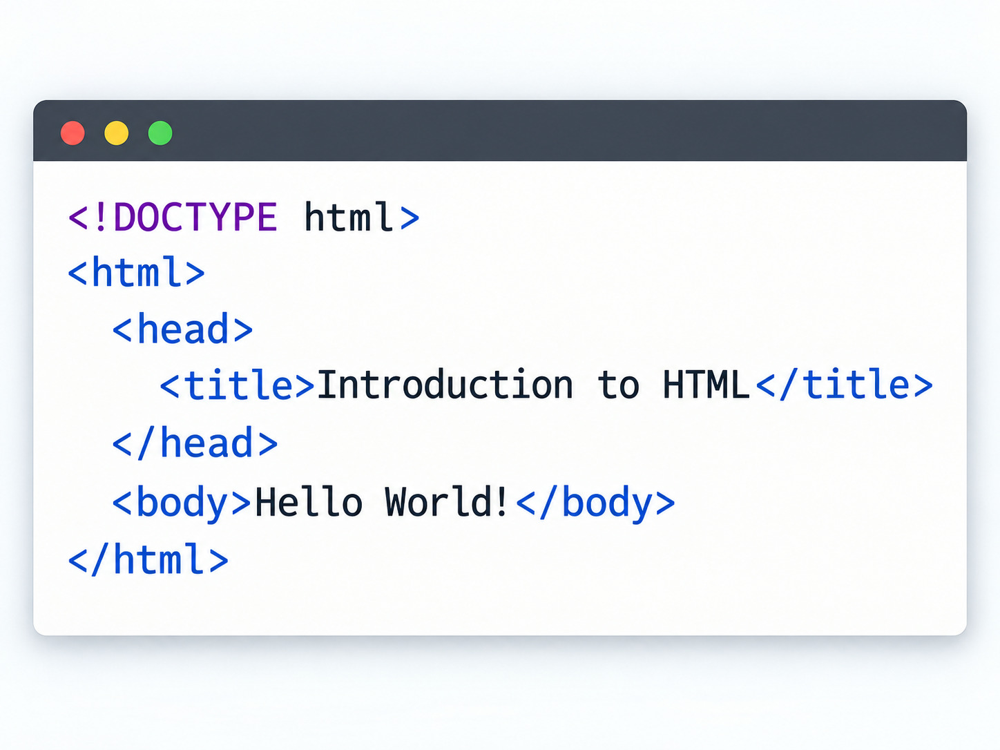

Introduction to coding basics
Coding is the process of creating instructions that computers can understand and execute. These instructions are written in programming languages, which serve as a bridge between human intent and machine action.
Programming involves problem-solving and logical thinking, as developers break down complex tasks into smaller, manageable steps that can be translated into code.
Some key concepts in coding include:
- Variables: Containers for storing data values
- Functions: Reusable blocks of code that perform specific tasks
- Control structures: Rules that determine the flow of execution in a program
- Objects: Instances of classes that contain data and methods
- Libraries: Pre-written code that can be reused to perform common tasks
In this course, I have learned how to create a basic HTML5 structure, including the use of semantic elements like
Overall, this course has provided me with a solid foundation in web development, and I am excited to continue learning and building more complex websites in the future.
Overall, this course has provided me with a solid foundation in web development, and I am excited to continue learning and building more complex websites in the future.

What I Have Learned
HTML (HyperText Markup Language) is the foundational standard markup language used to create and structure content on the World Wide Web. Invented by Tim Berners-Lee, it serves as the structural "skeleton" of virtually every webpage on the internet, instructing web browsers on how to display text, images, and multimedia.